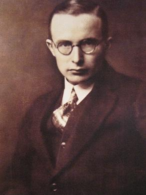

Uuno Kailas
Tiivis kuva kantaa suurta sisäistä liikettä.
Kailaan runoissa haavoittuvuus, kaipaus ja ulkopuolisuus saavat kirkkaan, usein ankaran muodon.
Etsi teokset kirjastostaElämä ja teokset
Uuno Kailas syntyi Heinolan maalaiskunnassa; hänen alkuperäinen sukunimensä oli Salonen. Hän kirjoitti runoutta ja proosaa sekä suomensi kirjallisuutta.
Paljain jaloin ilmestyi vuonna 1928. Kokoelma kuuluu Kailaan keskeiseen runotuotantoon. Hän kuoli Nizzassa vuonna 1933, mutta hänen tiivis ja tunnevoimainen runokielensä on säilyttänyt paikkansa suomalaisessa lyriikassa.
Tyyli ja teemat
Runon konkreettinen kuva voi kasvaa sisäisen tilan merkiksi. Rytmi ja vastakohdat korostavat jännitettä läheisyyden toiveen ja erillisyyden välillä. Puhujan kokemusta kannattaa seurata sellaisenaan tekemättä jokaisesta runosta suoraa elämäkerrallista todistusta.
Kaipaus · Ulkopuolisuus · Haavoittuvuus
Aloita tästä
Paljain jaloin
Runokokoelma kutsuu viipymään yksittäisten kuvien äärellä. Aloita lyhyestä runosta ja anna sen vastakohtien jäädä avoimiksi.
Valitse runosta yksi kuva ja seuraa, millaisen tunnetilan sanat sen ympärille rakentavat.